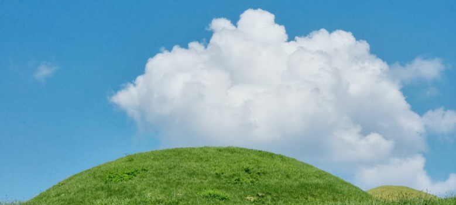
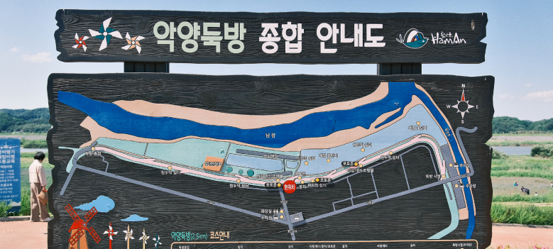
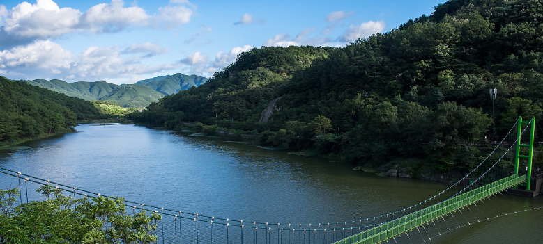

Tourist
함안 9경
함안 여행에 색깔을 더하다! 둑길과 물길, 꽃길에 어우러진 함안의 숨겨진 관광지를 지금 확인해보세요!
함안 1경 함안말이산고분군

- 고대 아라가야의 역사를 만날 수 있는 함안 말이산고분군 능선을 따라 인생사진을 남기는 사람들로 북적이는 함안대표관광지입니다.
- 해발 60m 안팎의 작은 봉우리들이 2km에 걸쳐 있는 주능선 위에 지름 40.2m의 가야 최대 고분 등 대형봉분이 줄을 지어있다.서쪽으로 뻗은 가지능선까지 아름다운 경관이 이어지는데, 능선을 따라 곳곳에서 인생사진을 남기는 사람들로 북적인다. 또한 함안박물관에 들러 아라가야의 역사를 알고 오르면 더 큰 감동을 느낄 수 있다.봄부터 가을까지 다양한 야생화와 들풀을 관찰할 수 있으며, 별자리 덮개돌 발견 이후 별을 관찰하는 행사도 수시로 열린다. 말갑옷, 배모양토기, 집모양토기 등 가야를 대표하는 유물이 출토된 곳이기도 하다.
함안 2경 악양의 꽃길과 노을

- 전국에서 가장 긴 둑방을 따라 핀 꽃양귀비와 코스모스! 둑길에서 만나는 아름다운 노울은 또 다른 감동을 선사합니다.
- 해발 60m 안팎의 작은 봉우리들이 2km에 걸쳐 있는 주능선 위에 지름 40.2m의 가야 최대 고분 등 대형봉분이 줄을 지어있다.서쪽으로 뻗은 가지능선까지 아름다운 경관이 이어지는데, 능선을 따라 곳곳에서 인생사진을 남기는 사람들로 북적인다. 또한 함안박물관에 들러 아라가야의 역사를 알고 오르면 더 큰 감동을 느낄 수 있다.봄부터 가을까지 다양한 야생화와 들풀을 관찰할 수 있으며, 별자리 덮개돌 발견 이후 별을 관찰하는 행사도 수시로 열린다. 말갑옷, 배모양토기, 집모양토기 등 가야를 대표하는 유물이 출토된 곳이기도 하다.
함안 3경 입곡군립공원의 단풍

- 끝이 보이지 않는 넓은 저수지 둘레길을 사랑하는 이와 함께 걸어보세요! 특히 봄에는 벚꽃과 홍매화로, 가을에는 단풍이 매우 아름다운 곳입니다.
- 해발 60m 안팎의 작은 봉우리들이 2km에 걸쳐 있는 주능선 위에 지름 40.2m의 가야 최대 고분 등 대형봉분이 줄을 지어있다.서쪽으로 뻗은 가지능선까지 아름다운 경관이 이어지는데, 능선을 따라 곳곳에서 인생사진을 남기는 사람들로 북적인다. 또한 함안박물관에 들러 아라가야의 역사를 알고 오르면 더 큰 감동을 느낄 수 있다.봄부터 가을까지 다양한 야생화와 들풀을 관찰할 수 있으며, 별자리 덮개돌 발견 이후 별을 관찰하는 행사도 수시로 열린다. 말갑옷, 배모양토기, 집모양토기 등 가야를 대표하는 유물이 출토된 곳이기도 하다.
함안 4경 무진정의 사계
- 사계절이 아름다운 무진정은 인생사진 스팟으로 유명한 곳! 고즈넉한 정자와 연못이 어우러진 환상적인 곳입니다.
- 해발 60m 안팎의 작은 봉우리들이 2km에 걸쳐 있는 주능선 위에 지름 40.2m의 가야 최대 고분 등 대형봉분이 줄을 지어있다.서쪽으로 뻗은 가지능선까지 아름다운 경관이 이어지는데, 능선을 따라 곳곳에서 인생사진을 남기는 사람들로 북적인다. 또한 함안박물관에 들러 아라가야의 역사를 알고 오르면 더 큰 감동을 느낄 수 있다.봄부터 가을까지 다양한 야생화와 들풀을 관찰할 수 있으며, 별자리 덮개돌 발견 이후 별을 관찰하는 행사도 수시로 열린다. 말갑옷, 배모양토기, 집모양토기 등 가야를 대표하는 유물이 출토된 곳이기도 하다.
함안 5경 연꽃테마파크의 아라홍련
- 성산산성에서 발굴된 700년 전 고려시대의 연씨를 발아시킨 아라홍련과 경복궁 연못에 복원된 법수홍련 등 다양한 연꽃을 가까이에서 볼 수 있는 곳입니다.
- 해발 60m 안팎의 작은 봉우리들이 2km에 걸쳐 있는 주능선 위에 지름 40.2m의 가야 최대 고분 등 대형봉분이 줄을 지어있다.서쪽으로 뻗은 가지능선까지 아름다운 경관이 이어지는데, 능선을 따라 곳곳에서 인생사진을 남기는 사람들로 북적인다. 또한 함안박물관에 들러 아라가야의 역사를 알고 오르면 더 큰 감동을 느낄 수 있다.봄부터 가을까지 다양한 야생화와 들풀을 관찰할 수 있으며, 별자리 덮개돌 발견 이후 별을 관찰하는 행사도 수시로 열린다. 말갑옷, 배모양토기, 집모양토기 등 가야를 대표하는 유물이 출토된 곳이기도 하다.